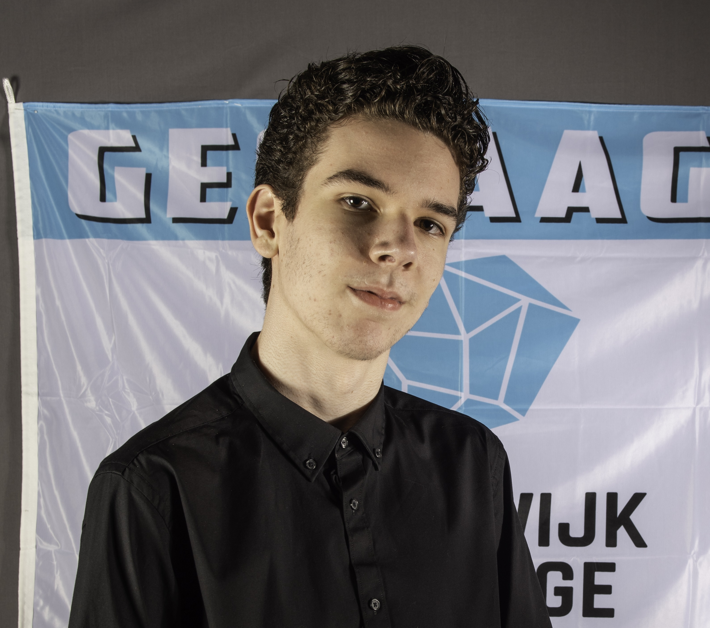
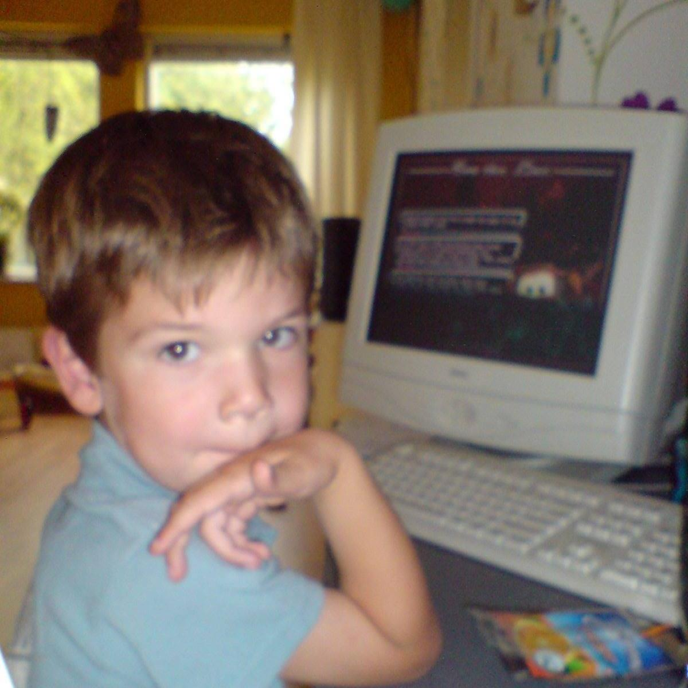

My name is Merijn van Gent.
I am 17 years old and I live in Terneuzen, Netherlands.
Hobbies of mine are playing games, listening to music and going outside with friends.
Some games I like are survival games, like Minecraft and Subnautica, but also shooters like DOOM and rhythm games like Stepmania.
Before going to the HZ, I went to the Lodewijk College in Terneuzen.
There, I went to the HAVO.

While I think I can be pretty introverted usually, I can be social as well.
I like to keep things simple if possible, but I try my best to get things done.
